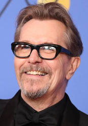
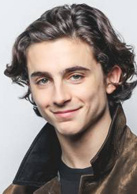
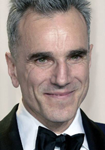
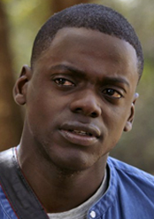
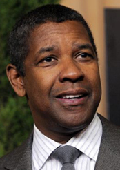

-
Ganador: Gary Oldman por : El instante más oscuro
(Londres, Inglaterra; 21 de marzo de 1958) es un actor, director de cine, guionista, músico y productor inglés, ganador de tres BAFTA, un premio Saturno, un Globo de Oro y un Screen Actors Guild, y nominado a la Palma de Oro, los premios Emmy, entre otros. En 2018, recibió un Óscar a mejor actor por su interpretación de Winston Churchill en Darkest Hour.
-
Timothée Chalamet por : Call Me By Your Nam
(Manhattan, Nueva York; 27 de diciembre de 1995) es un actor estadounidense. Es conocido por sus actuaciones como Finn Walden en la serie de Showtime Homeland (2012), Danny Vance en la película de drama Men, Women & Children (2014), Tom Cooper en la película de ciencia ficción Interstellar (2014), Elio Perlman en la película de drama romántico Call Me by Your Name (2017) y Kyle Scheible en la película de drama Lady Bird (2017).
-
Daniel Day-Lewis por : El hilo invisible
(Kensington, Londres, 29 de abril de 1957) es un laureado actor británico naturalizado irlandés en 1993.Se ha hecho con los principales premios del séptimo arte; entre ellos, tres premios Óscar, por las cintas: Mi pie izquierdo, de 1989; There Will Be Blood, de 2007, y Lincoln, del 2012, y es el único actor que ha conseguido el Óscar en tres ocasiones como actor principal y uno de los tres únicos hombres que se han hecho con tres estatuillas.
-
Daniel Kaluuya por : Déjame salir
(Londres; 24 de febrero de 1989) es un actor, escritor y modelo inglés con gran carrera en Estados Unidos.Conocido por haber participado en el segundo episodio de la primera temporada de la serie de televisión Black Mirror y en la película Get Out, por la que obtuvo una nominación al Óscar como mejor actor y, también por haber aparecido en Skins, primera y segunda temporada.
-
Denzel Washington por : Roman J. Israel, Esq
Denzel Hayes Washington, Jr. (n. Mount Vernon, Nueva York; 28 de diciembre de 1954) es un actor y director de cine estadounidense, ganador de tres Globos de Oro, un Premio del Sindicato de Actores, un premio Tony y dos premios Óscar; estos por las cintas Glory como mejor actor de reparto en 1989, y por Día de entrenamiento como mejor actor principal en 2001.